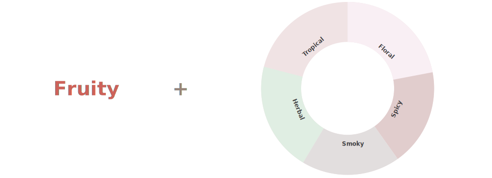

If the only wine you’ve had come in a box, this is the right place
for you. Learn about different wine styles, serving methods, and
pairings. With this knowledge in hand, you’ll be able to make your
friends think that you’re a wine connoisseur.
We select the 12 most popular wines to walk you through the common
wine descriptors, serving instructions, pairing suggestions
Wine Color
Wine color is one of the strongest identifying factors of wine.
Besides indicating the difference between red, white, and rose,
wine color may also be a signal of the acidity or richness.
Sweet & Dry
The sweetest wines sometimes taste like juice, but where does the sweetness come from? A lot of it depends on the sugar levels in wine, but alcohol content, acidity, and tannin levels also determine how sweet or dry a wine is.
Boldness & Climate
Boldness in wine depends on several factors, including tannin level and alcohol content. Additionally, climate can affect the boldness of a wine. Especially with red wines, lighter-bodied wines tend to grow in colder climates.
Flavors
How do wines contain flavors like apple, caramel, or even spices? The flavor from wine comes from the fermentation process, which releases flavors from the grapes themselves that may remind you of other fruits and foods. The science behind wine flavor is complex, and other factors including when the grapes are picked and fermentation can play a part.

Serving Glass
If you’re new to wine, you might not even know that different wines have different serving glasses. Surprisingly, the shape of a wine glass can enhance its flavors and make it taste better.
Serving Temperature
You might have also noticed that wines taste better at certain temperatures. Red wines are typically best served below room temperature, white wines at a “fridge cold” temperature, and sparkling wines ice cold.
Pairing
Wine and food pairings might seem complex, but this knowledge will certainly help you step up your next dinner party. With wines, you can create contrasting pairings which create balance by contrasting tastes and flavors, and you can also create congruent pairings which amplify shared flavor compounds.